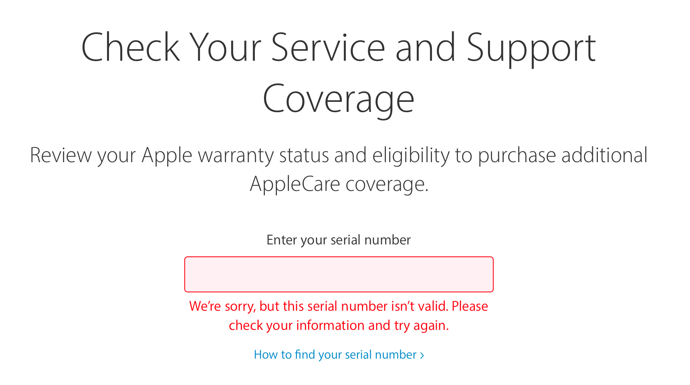
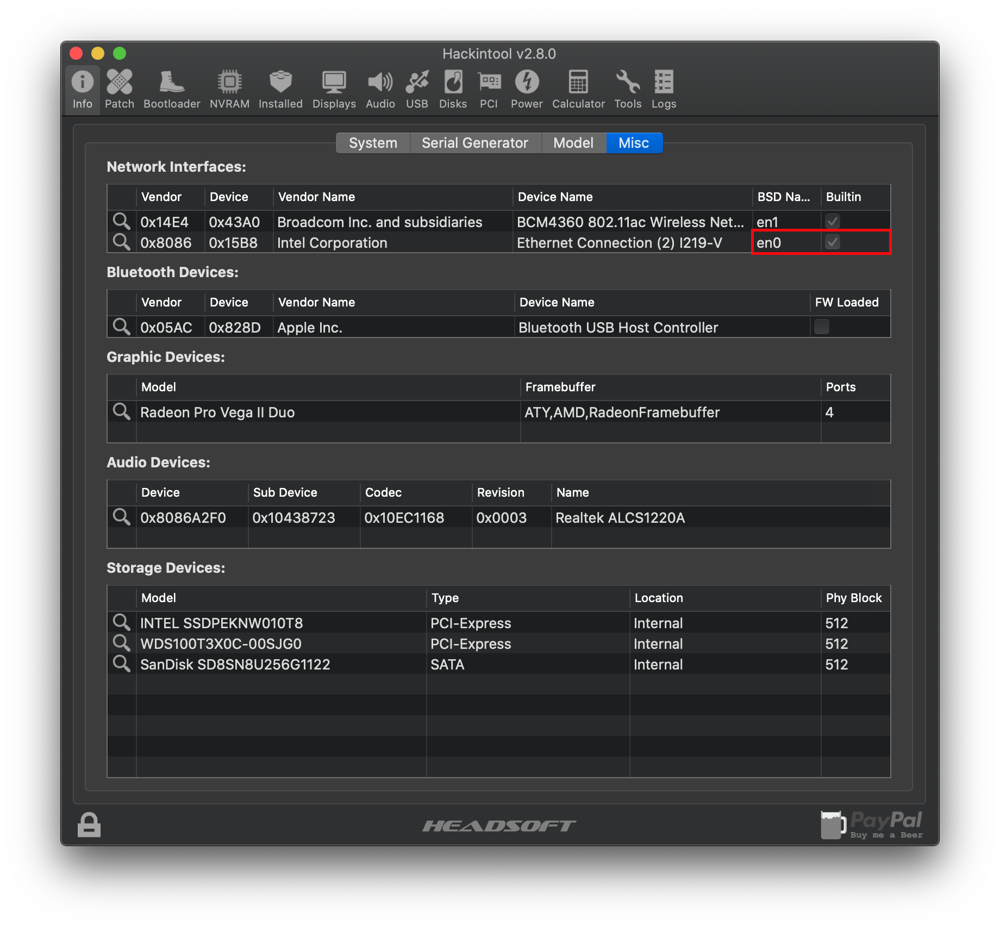
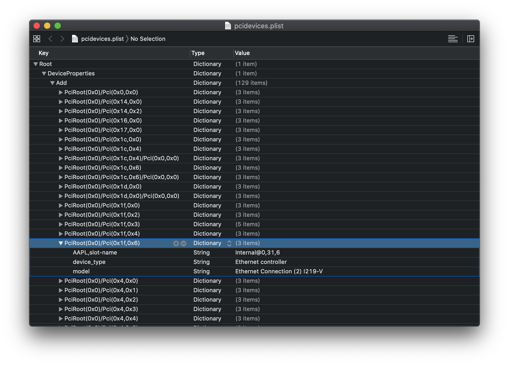
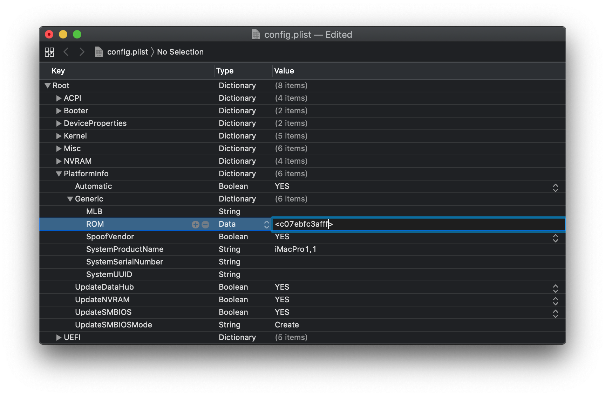
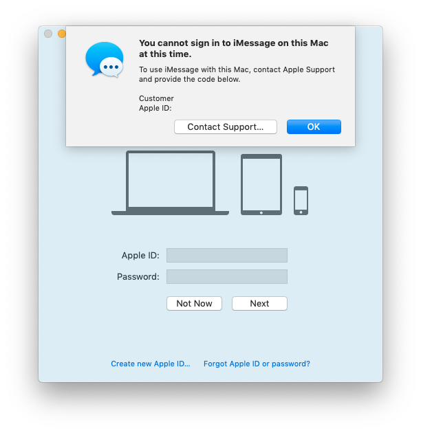

Last modified: Sun Apr 19 2020 01:57:26 GMT+0000 (Coordinated Universal Time)
Fixing iMessage and other services with OpenCore
- Supported version: 0.5.7
Table of Contents:
- Generate a new Serial
- Fixing En0
- Fixing ROM
- Verifying NVRAM
- Clean out old attempts
- Cleaning up your AppleID
- Customer Code error
This page is for those having iMessage and other iServices issues, this is a very basic guide so will not go as in-depth into the issues as some other guides. This specific guide is a translation and reinterpretation of the AppleLife Guide on fixing iService: Как завести сервисы Apple - iMessage, FaceTime, iCloud
Note: You and you alone are responsible for your AppleID, read the guide carefully and take full responsibility if you screw up. Dortania and other guides are not held accountable for what you do.
Generate a new Serial
Download GenSMBIOS and select option 1 to download MacSerial and next option 3 to generate some new serials. What we're looking for is a valid serial that currently has no registered purchase date.
Tip: iMacPro1,1 10 will print 10 serials, this will save you some time on generating

Now enter the serial into the Apple Check Coverage page, you will get 1 of 3 responses:
"We’re sorry, but this serial number isn’t valid. Please check your information and try again.":

Valid Purchase date:
Purchase Date not Validated:

This last one is what we're after, as we want something genuine but currently not in use by anyone. Now we can translate the rest of the values into our config.plist -> PlatformInfo -> Add:
- Type = SystemProductName
- Serial = SystemSerialNumber
- Board Serial = MLB
- SmUUID = SystemUUID
Note: "We’re sorry, but this serial number isn’t valid. Please check your information and try again." works for many users as well, do note though if you've had a bad track record with Apple/iServices you many need one that's "Purchase Date not Validated". Otherwise there may be suspicion
Fixing En0
To start, grab Hackintool (Github link) and head to System -> Peripherals (Info -> Misc on older versions of Hackintool)
Here under Network Interfaces (network card icon), look for en0 under BSD and check whether the device has a checkmark under Builtin. If there is a checkmark, skip to Fixing ROM section otherwise continue reading.
What if I don't have En0 at all?!?
Well, we'll want to reset macOS so it can build the interfaces fresh, open terminal and run the following:
sudo rm /Library/Preferences/SystemConfiguration/NetworkInterfaces.plist
sudo rm /Library/Preferences/SystemConfiguration/preferences.plist
Once done reboot and check again.
If this doesn't work, add NullEthernet.kext and ssdt-rmne.aml to your EFI and config.plist under Kernel -> Add and ACPI -> Add respectively. The SSDT is precompiled so no extra work needed, reminder compiled files have a .aml extension and .dsl can be seen as source code.

Now head under the PCI tab of Hackintool and export your PCI DeviceProperties, this will create a pcidevices.plist on your desktop

Now search through the pcidevices.plist and find the PCIRoot of your ethernet controller. For us, this would be PciRoot(0x0)/Pci(0x1f,0x6)

Now with the PCIRoot, go into your config.plist -> DeviceProperties -> Add and apply the property of built-in with type Data and value 01

Fixing ROM
This is a section many may have forgotten about but this is found in your config.plist under PlatformInfo -> generic -> ROM
To find your actual MAC Address/ROM value, you can find in a couple places:
- BIOS
- macOS: System Preferences -> Network -> Ethernet -> Advanced -> MAC Address
- Windows: Settings -> Network & Internet -> Ethernet -> Ethernet -> Physical MAC Addressß
Some users have even gone as far as using real Apple MAC Address dumps for their config, for this guide we'll be using our real MAC Address but note that this is another option.
When adding this to your config, c0:7e:bf:c3:af:ff should be converted to c07ebfc3afff as the Data type cannot accept colons(:).

Verifying NVRAM
Something that many forget about iServices is that NVRAM is crucial to getting it working correctly, the reason being is that iMessage keys and such are stored in NVRAM. Without NVRAM, iMessage can neither see nor store keys.
So we'll need to verify NVRAM works, regardless if "it should work" as some firmwares can be more of a pain than others.
Please refer to the Emulated NVRAM section of the OpenCore Guide for both testing if you have working NVRAM and emulating it if you dont.
Clean out old attempts
This is important for those who've tried setting up iMessage but failed, to start make sure your NVRAM has been cleared. You can enable the option in the boot picker in your config under config.plist -> Misc -> Security -> AllowNvramReset.
Next open terminal and run the following:
sudo rm -rf ~/Library/Caches/com.apple.iCloudHelper* \
~/Library/Caches/com.apple.Messages* \
~/Library/Caches/com.apple.imfoundation.IMRemoteURLConnectionAgent* \
~/Library/Preferences/com.apple.iChat* \
~/Library/Preferences/com.apple.icloud* \
~/Library/Preferences/com.apple.imagent* \
~/Library/Preferences/com.apple.imessage* \
~/Library/Preferences/com.apple.imservice* \
~/Library/Preferences/com.apple.ids.service* \
~/Library/Preferences/com.apple.madrid.plist* \
~/Library/Preferences/com.apple.imessage.bag.plist* \
~/Library/Preferences/com.apple.identityserviced* \
~/Library/Preferences/com.apple.ids.service* \
~/Library/Preferences/com.apple.security* \
~/Library/Messages
Verifying your work one last time
Grab macserial and run the following:
path/to/macserial -s
This will provide us with a full rundown of our system, verify that what is presented matches up with your work.
Cleaning up your AppleID
- Remove all devices from your AppleID: Manage your devices
- Enable 2 Factor-Auth
- Remove all iServices from Keychain, some examples:
ids: identity-rsa-key-pair-signature-v1 ids: identity-rsa-private-key ids: identity-rsa-public-key ids: message-protection-key ids: message-protection-public-data-registered ids: personal-public-key-cache iMessage Encryption Key iMessage Signing Key com.apple.facetime: registrationV1 etc ...
And a final layer of precaution is to make a new AppleID to play with, this makes sure that if you do end up blacklisting your account that it's not your main.
Tip: Adding a payment card to the account and having a decent amount of purchases can also help. While not concrete, you can think of an AppleID as a credit score where the better an Apple customer you are the more likely they won't have activation issues or get an easier pass with AppleSupport
Customer Code error
Welp mate, you've done it. You blackmailed your AppleID. The fix is simple but not pretty, you MUST call Apple. Otherwise, there is no proceeding besides using a new account. Adding a payment card before calling can help legitimize the account so it doesn't seem as much like a bot.
